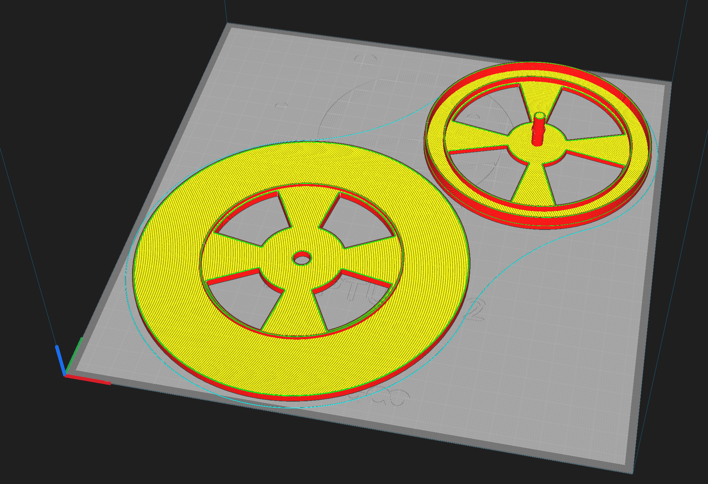
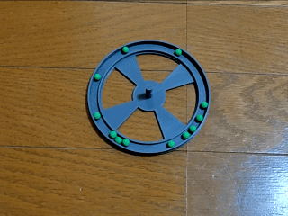

今回は珍しくソフト系のネタではなく、3D プリンタ系の話です。
FDM 式は面倒が少ない
3D プリンタを購入するにあたり、事前に色々と調べた結果、 光造形式ではなく FDM 式にしました。
FDM 式を選んだ主な理由は 「面倒が少ない」 です。
光造形式の洗浄・二次硬化はどうしても面倒に感じました。 またそれ以外にも光造形式の以下の点が気になり、FDM 式を選択しています。
- レジンの匂い
- 多くのレジンが無駄になってエコ(economy,ecology)でない
- FDM 式に比べて強度が弱い
もちろん光造形式の「精度の良さ」や、「印刷時間が平面の大きさに比例しない」という メリットは魅力的ですが、メリット・デメリットを比べた時に、 自分には FDM 式の方があっていると判断しました。
それに、自分の 3D プリンタが欲しい理由は、 フィギュアなどの観賞用のオブジェクトを作ることではなく、 パーツ等の実用的なモノを作ることが目的なため、 見た目よりも機能性の高い FDM 式の方がマッチしています。
フィラメントの湿気対策
光造形式に比べて「面倒が少ない」FDM 式ですが、全く面倒がない訳でもありません。
その代表が 「フィラメントの湿気対策」 でしょう。
フィラメントが水分を吸収してしまうと、印刷結果に大きな悪影響があります。 そのため、「フィラメントの湿気対策」が必須になります。
なお、プリント中でない長期保管時の湿気対策は当然ですが、 プリント中も湿気対策をした方が良いでしょう。 なぜなら、 3D プリントの印刷時間は基本的に数時間単位と長いですし、 日本は高温多湿な気候であるためです。
ネットで検索すると、皆さんそれぞれ自作の対策をされています。
とても見栄えが良く、機能性も高そうなのですが、 個人的にちょっと 「ハードルが高い」 というか、 作るのにそれなりの準備が必要なモノが多そうでした。
私は 直ぐに使いたい & お金が掛らないモノ にしたかったので、 先人の知恵をベースに自分なりの 3D プリンタ用フィラメント除湿・送出ボックス を作成しました。
3D プリンタ用フィラメント除湿・送出ボックス
必要な材料は以下です。
-
100 均で入手するモノ
- フィラメントが入る丁度良い大きさ(底が広いタイプ)の蓋付き透明な密閉プラケース
- 湿度計 (無くても湿度を確認できなくなるだけなので、必須ではない。が、あった方が良い)
- BB弾 x 2個 (家にエアガン用 BB 弾があればそれでも可)
-
家を探せば出てくるモノ
- 除湿剤 (塩化カルシウムタイプは ダメ絶対 )
-
3D プリンタに付属されているモノ
- 予備のチューブ
これだけです。
上記の100均で入手するモノは、トータル 500 〜 600 円 で購入できます。
除湿剤は、家に無ければホームセンター等で買いましょう。
なお、除湿剤の素材は塩化カルシウムタイプは NG です。 何故なら塩化カルシウムタイプは、空気中の水分を吸収して液体に戻す効果があり、 これでは除湿どころか、フィラメントが水浸しになってしまいます。 除湿剤はシリカゲルタイプにします。
なお極短期間であれば、 塩化カルシウムタイプの除湿剤で凌ぎ、 長期的にはシリカゲルタイプに移行するのでも問題ないでしょう。
作成方法
作成手順は以下です。
- プラケースに予備のチューブを通す穴を開けて、チューブを通す
- BB弾 x 2個をプラケースにブチまける
- BB弾の上にフィラメントのリールを横に倒して乗せる
- フィラメントをチューブに通す
- フィラメントの上に除湿剤と湿度計を乗せる
- プラケースを閉じる
構成の重要パーツ
この構成の重要なパーツは BB 弾 です。 (「100均に BB 弾あるかなぁ？」と気になりましたが、 オモチャコーナーに置いてありました。)
フィラメントを BB 弾 の上に乗せることで、 フィラメント自体を 超簡易的なボールベアリング にしています。
BB 弾 の上に乗せるためにも、 使用するプラケースはちょうど良い大きさにする必要があります。 大き過ぎると、BB 弾が 2 個では足りません。 逆に BB 弾を詰め込み過ぎると、BB 弾が転がらないので、適度なスペースを作っておきます。
なお BB 弾を敷き詰る代りに、 以下のようなパーツを利用すると理想的な形になると思いますが、 それだと今回の前提の 直ぐに使えて & お金が掛らないモノ から外れてしまうので、 利用しません。
またこの構造にするには、フィラメントは縦置きではなく、 必ず 横置き になります。
横置きが気になる人は、この方法は利用できません。
発展形
このボックスの発展形としては、以下があります。
-
湿度計を見易くする
- 湿度計をプラケースの側面に設置するマウンタを作成する
-
リールの回転系を改善する
- 簡易ターンテーブルを作成する
-
あるいは、BB弾が散らばらないようにプラケース内にスペーサーを作成する
- 簡易ターンテーブルを作成すれば BB 弾は不要
どれも、簡単に 3D プリンタで作成できると思います。
簡易ターンテーブル
作成した簡易ターンテーブルのデータを載せておきます。
-
STL データ
-
イメージ
- 
-
動作
- 
数個の BB 弾を溝に置くだけの簡単な構造ですが、 抵抗も少なく、スムーズにフィラメントを送出できます。
まとめ
この構成のメリットは、以下です。
- 直ぐにパーツを揃えられる
- 組み立てが楽
- 安価
- 横に倒して使うので安定する
- 発展させて、より使い易いモノに出来る
欠点(？)は、必ず横置きになることくらいかな？
以上。